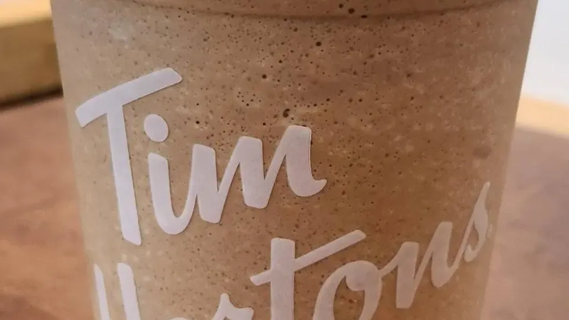
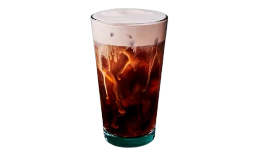

Full Menu / Blog / Tim Hortons Secret Menu

Tim Hortons has no official secret menu. The "secret menu" is a list of fan-made hacks that combine regular menu items, like a White Hot Chocolate with an espresso shot or a tea bag steeped in it. Most work at any Canadian Tim Hortons if you ask for the parts by name.
Every hack below is built from items on the current Canadian menu, checked against our menu pages on September 26, 2026. For each one we list what to ask for and the price of the base item. Add-ons like extra espresso shots, syrups or tea bags are charged differently at each restaurant, so expect a small extra cost on some.
1. The 99 (the "Wayne Gretzky")

The 99 is a brewed coffee with nine creams and nine sugars, named after Wayne Gretzky's jersey number. It's a Double Double pushed to the limit: extremely sweet and more cream than coffee.
How to order: ask for a brewed coffee with nine cream and nine sugar. The base coffee costs $1.59 for a small up to $2.35 for an extra large. Order at least a large so it fits.
2. Coffee Crisp Hot Chocolate

Adding espresso to a White Hot Chocolate gives you a drink that tastes like a Coffee Crisp chocolate bar. It's the most-shared Tim Hortons hack, and it appears in some form on most secret-menu lists.
How to order: a White Hot Chocolate ($2.39 small) with one shot of espresso. For a stronger version, use two shots in a regular Hot Chocolate. Some fans also add maple syrup.
3. Apple Pie White Hot Chocolate
Steeping an apple cinnamon tea bag in a White Hot Chocolate makes it taste like apple pie. The creamy white chocolate stands in for the crust and filling, and the tea adds the apple and spice.
How to order: a White Hot Chocolate with an apple cinnamon tea bag left in. Add one pump of caramel if your store has it. Let it steep for two or three minutes before you drink it.
4. Peppermint Hot Chocolate

A peppermint tea bag turns a regular Hot Chocolate into a mint hot chocolate for the price of a tea bag. It works in either the regular or the White Hot Chocolate.
How to order: a Hot Chocolate ($2.39 small) with a peppermint tea bag. For a Thin Mint-style version, ask for half French Vanilla, half Hot Chocolate with the peppermint tea bag.
5. "Cereal Milk" Earl Grey White Hot Chocolate
Earl Grey steeped in White Hot Chocolate tastes surprisingly like the milk left in a bowl of Froot Loops. The bergamot in Earl Grey gives it a citrus, fruity note, and the white chocolate makes it sweet and creamy.
How to order: a White Hot Chocolate with an Earl Grey tea bag. Take the bag out after about three minutes, or the tea gets bitter.
6. Chai White Hot Chocolate

A chai tea bag in a White Hot Chocolate makes a sweet, spiced drink that some fans call "Christmas in a cup." It's gentler and creamier than a chai latte, with no espresso.
How to order: a White Hot Chocolate with a chai tea bag. Chai availability varies by store, so ask what teas they have first.
7. Budget London Fog

You can get most of the London Fog flavour for less by ordering an Earl Grey tea with vanilla and milk. You lose the steamed-milk foam but keep the taste.
How to order: a Specialty Tea in Earl Grey ($1.79 small) with milk and a pump of vanilla. The official London Fog starts at $3.29 for a small, so this saves you over a dollar before any syrup charge.
8. Lemon Meringue Frozen Lemonade

Mixing whipped topping into a Frozen Lemonade gives it the sweet-sour taste of lemon meringue pie. The cream softens the tartness and makes the slush richer.
How to order: a Frozen Lemonade ($2.39 small) with whipped topping, stirred in. Drink it quickly, because the whip melts into the slush.
9. Triple Berry Frozen Lemonade
Steeping a berry tea bag in a Frozen Lemonade adds berry flavour and a pink colour without extra syrup. It's a cheap way to get a berry lemonade when the seasonal Quenchers aren't on the menu.
How to order: a Frozen Lemonade with a berry tea bag (fans ask for Triple Berry). Let it sit for a few minutes, since tea steeps slowly in a cold drink.
10. Chocolate Timbit Iced Capp

Topping an Iced Capp with whipped cream and a Chocolate Glazed Timbit turns it into a dessert. The Timbit softens as it sits in the cream, like a donut dunked in a milkshake.
How to order: an Original Iced Capp ($3.29 small) with whipped topping, plus a Chocolate Glazed Timbit ($0.35) on top. You can also buy the Timbit separately and add it yourself.
11. Hash Brown Breakfast Sandwich

Putting the hash brown inside your breakfast sandwich adds crunch. Without the meat, it also makes a good vegetarian sandwich. The bolder version replaces the bread with two hash browns.
How to order: any breakfast sandwich (the Bacon Breakfast Sandwich is $4.49) with a Hashbrown ($2.19) added inside. Hash browns are only served during breakfast hours, usually until about 11 a.m.
12. Warm or Grilled Donut
Asking for a donut warmed up makes it taste closer to fresh from the fryer. Sour Cream Glazed and Honey Dip work best, because the glaze softens and the inside stays soft.
How to order: a Sour Cream Glazed or Honey Dip donut ($2.09) warmed up. Some fans ask for it on the panini press to caramelize the glaze. That depends on the staff agreeing to the extra work, so ask politely and avoid rush hour.
13. Veggie Bagel Sandwich
You can turn any bagel into a vegetarian sandwich by asking for the vegetable toppings with herb and garlic cream cheese. Fans say a cheese bagel works best.
How to order: a bagel toasted with herb and garlic cream cheese, plus lettuce, tomato and cucumber. Toppings depend on what your store has in its sandwich station.
Tim Hortons Secret Menu Cheat Sheet
This table shows all 13 hacks side by side, with the base item and its listed small or single price in Canada before tax.
| # | Hack | What to ask for | Base item price |
|---|---|---|---|
| 1 | The 99 | Brewed coffee, 9 cream, 9 sugar | $1.59 |
| 2 | Coffee Crisp Hot Chocolate | White Hot Chocolate + espresso shot | $2.39 + shot |
| 3 | Apple Pie White Hot Chocolate | White Hot Chocolate + apple cinnamon tea bag | $2.39 + tea |
| 4 | Peppermint Hot Chocolate | Hot Chocolate + peppermint tea bag | $2.39 + tea |
| 5 | Cereal Milk White Hot Chocolate | White Hot Chocolate + Earl Grey tea bag | $2.39 + tea |
| 6 | Chai White Hot Chocolate | White Hot Chocolate + chai tea bag | $2.39 + tea |
| 7 | Budget London Fog | Earl Grey tea + milk + vanilla | $1.79 + syrup |
| 8 | Lemon Meringue Lemonade | Frozen Lemonade + whipped topping | $2.39 + whip |
| 9 | Triple Berry Lemonade | Frozen Lemonade + berry tea bag | $2.39 + tea |
| 10 | Chocolate Timbit Iced Capp | Iced Capp + whip + Chocolate Glazed Timbit | $3.29 + $0.35 |
| 11 | Hash Brown Breakfast Sandwich | Breakfast sandwich + Hashbrown inside | $4.49 + $2.19 |
| 12 | Warm Donut | Sour Cream Glazed or Honey Dip, warmed | $2.09 |
| 13 | Veggie Bagel Sandwich | Bagel + herb and garlic cream cheese + veggies | Varies by bagel |
Which "Secret Menu" Items Can't You Order?
Some secret-menu lists online include items that rely on ingredients Tim Hortons doesn't list in Canada. We left these out:
- Protein powder blended into an Iced Capp. There's no protein powder on the Canadian menu we track, so staff have nothing to add.
- A "Timbits bowl." Timbits come in boxes of 10, 20 or 50 ($3.19 to $9.99), not in bowls or cups.
- Anything built on a discontinued item. Older lists use Iced Capps made with chocolate milk and raspberry syrup, or a French Toast bagel. Ingredients like these come and go, so check the Tim Hortons coffee menu for what's on offer now.
How Do You Order From the Tim Hortons Secret Menu?
Order a secret-menu item by naming each part, not the nickname. Say "a medium White Hot Chocolate with a shot of espresso," not "a Coffee Crisp." Staff aren't trained on fan names, and every hack here is just a regular order with a change.
- Avoid the drive-thru and the morning rush. Tea bags and toppings slow the line down, so order at the counter when it's quiet.
- Use the Tims app for simple changes. Cream, sugar, espresso shots and many flavours can be set in the app. Tea bags and toppings usually have to be requested in person. Our Tim Hortons app guide explains the ordering options.
- Expect some changes to cost extra. Added espresso shots, syrups and toppings may cost more, and the price varies by location.
- Ask what the store has. Tea flavours and syrups vary from store to store, so check before you build an order around one.
Frequently Asked Questions
Does Tim Hortons have a secret menu?
No, Tim Hortons does not have an official secret menu. The "secret menu" is a collection of customer-made hacks that combine regular menu items. You can order them by asking for the individual parts.
What is the most popular Tim Hortons secret menu item?
The Coffee Crisp Hot Chocolate is the most widely shared hack. It's a White Hot Chocolate with a shot of espresso, and it appears on most secret-menu lists.
What is a 99 at Tim Hortons?
A 99 is a brewed coffee with nine creams and nine sugars. It's named after Wayne Gretzky's jersey number, 99. It's an unofficial order, so ask for the creams and sugars by number.
What is a Double Double at Tim Hortons?
A Double Double is a coffee with two creams and two sugars. It's the chain's best-known order and is on the regular menu, not the secret menu. A Triple Triple (three and three) and a Four by Four follow the same pattern.
Can you put a tea bag in a hot chocolate at Tim Hortons?
Yes. Staff can add a tea bag to a Hot Chocolate or White Hot Chocolate, which is how the apple pie, peppermint, chai and Earl Grey hacks work. Ask at the counter, and the tea may cost extra.
Can you add espresso to any Tim Hortons drink?
Most Tim Hortons drinks can take an extra espresso shot, including hot chocolates, brewed coffee and Iced Capps. On its own, a single espresso is listed at $1.49 in Canada. The price of an added shot varies by store.
Are Tim Hortons secret menu items more expensive?
Usually only slightly. You pay the price of the base item plus any extra shots, syrups or toppings. A few hacks, like the Budget London Fog, cost less than the official drink they copy.
Can you order Tim Hortons secret menu items in the app?
Partly. The Tims app lets you change cream, sugar, espresso shots and flavours on many drinks. Tea bags steeped in other drinks and extra toppings usually have to be requested at the counter.
Can you order the secret menu at the drive-thru?
You can, but it slows the line, and complicated requests are more likely to come out wrong. Custom orders are easier at the counter outside the morning rush.
Does the Tim Hortons secret menu work in the U.S.?
Most drink hacks work at U.S. Tim Hortons too, because they use core items like brewed coffee, espresso and hot chocolate. Menus differ between the two countries, so check that your local store has the base item.
Is there a Tim Hortons secret menu for food?
Yes, a few food hacks exist. The most useful are a hash brown inside a breakfast sandwich, a warmed or grilled donut, and a veggie bagel sandwich with herb and garlic cream cheese.
This is an independent, unofficial guide. It is not affiliated with, endorsed by, or sponsored by Tim Hortons or Restaurant Brands International. Tim Hortons has no official secret menu; these are customer-made customizations collected from Narcity, Style Democracy, View the Vibe and Chowhound. Base prices are listed Canadian menu prices before tax, taken from our menu pages, and add-on charges vary by location. Tea flavours, syrups and toppings vary by restaurant. Photos show the base menu item, not the finished hack. See Sources.